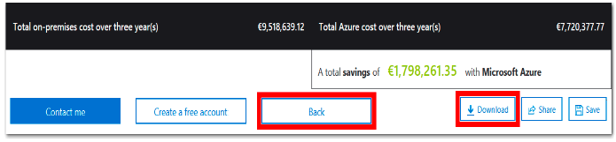

Lab 2: Use the Azure TCO Calculator (10 min)
In this Lab, you will use the Total Cost of Ownership (TCO) Calculator to generate a cost comparison report for an on-premises environment.
Note: This Lab provides example definitions of on-premises infrastructure and workloads for a typical datacenter. To create a TCO Calculator report, use the example definitions or provide details of your actual on-premises infrastructure and workloads.
Task 1: Configure the TCO calculator
In this task, we will add infrastructure information to the calculator.
1 - In a browser, navigate to the Total Cost of Ownership (TCO) Calculator page.
2 - To add details of your on-premises server infrastructure, click + Add server workload in the Define your workloads pane.
| Setting | Value |
|---|---|
| Name | Servers: Windows VMs |
| Workload | Windows/Linux Server |
| Environment | Virtual Machines |
| Operating system | Windows |
| VMs | 50 |
| Virtualization | Hyper-V |
| Core(s) | 8 |
| RAM (GB) | 16 |
| Optimize by | CPU |
| Windows Server 2008/2008 R2 | Off |
3 - Select +Add server workload to make a row for a new server workloads definition.
| Setting | Value |
|---|---|
| Name | Servers: Linux VMs |
| Workload | Windows/Linux Server |
| Environment | Virtual Machines |
| Operating system | Linux |
| VMs | 50 |
| Virtualization | VMware |
| Core(s) | 8 |
| RAM (GB) | 16 |
| Optimize by | CPU |
| Windows Server 2008/2008 R2 | Off |
4 - In the Storage pane, click Add storage.
| Setting | Value |
|---|---|
| Name | Server Storage |
| Storage type | Local Disk/SAN |
| Disk type | HDD |
| Capacity | 60 TB |
| Backup | 120 TB |
| Archive | 0 TB |
5 - In the Networking pane, add bandwidth.
| Setting | Value |
|---|---|
| Outbound bandwidth | 15 TB |
6 - Click Next.
7 - Explore the options and make any adjustments that you require.
| Setting | Value |
|---|---|
| Currency | Euro |
8 - Click Next.
Task 2: Review the results and save a copy
In this task, we will review cost saving recommendations and download a report.
| Setting | Value |
|---|---|
| Timeframe | 3 years |
| Region | North Europe |
2 - To modify the information you provided, go to the bottom of the page, and click Back.
3 - To save or print a PDF copy of the report, click Download.

Congratulations! You have used the TCO Calculator to generate a cost comparison report for an on-premises environment.